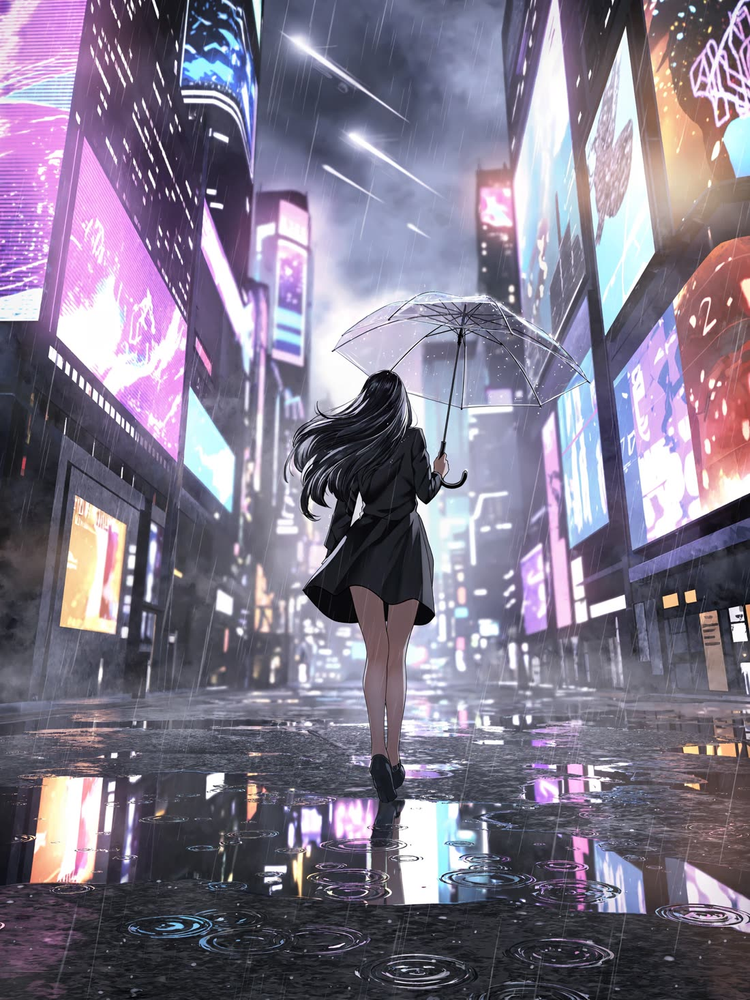

头条
一整屏的雪落下来，整座城安静了
凌晨四点，扫雪车还没上街，整条街只有铁锹刮过柏油的声音。等到第一班公交驶过，积雪已经被压成一条灰白的线。
布局模式 17 · 版面版面
版面自己会说话：大块讲主故事，小块填次要，尺寸就是优先级。
杂志网格把印刷版的版面逻辑搬到网页：用 grid-template-areas 画出不等大的区块，头条占 2×2，次条占 2×1，短讯占 1×1，读者一眼就知道什么最重要。
它的三条纪律是——所有块不能同尺寸（那等于没有层级）、图片裁切比例必须统一（否则网格会歪）、正文段落绝不能加位移动画（阅读稳定性优先）。标题的 hover 只允许直接换色，不允许发光或阴影。
用上方按钮切换视口宽度，看版面怎么退化：桌面 4 列、平板 2 列、手机单列。头条在手机上不再跨列，标签颜色始终跟着栏目走——红是头条、青是文化、深蓝是深度。
头条
凌晨四点，扫雪车还没上街，整条街只有铁锹刮过柏油的声音。等到第一班公交驶过，积雪已经被压成一条灰白的线。
文化
三条街之外，纸质书的销量涨了四成。店主说，来买书的人比十年前多，只是他们不再叫它「买书」。
短讯
1. 城南的旧粮仓改成图书馆，下月开放。
2. 地铁三号线延长段开始试运行。
3. 城北的最后一间照相馆关门，第七代决定不续。
4. 河边的夜市从今年起不再用塑料碗。
5. 一只灰喜鹊连续七天在同一根电线上等人。
6. 市立美术馆的夜场延长到十点。
深度

不是因为导航慢了，是因为导航把「路」变成了「路线」：你不再知道自己正穿过哪条街，只是被送到目的地。
#1a1a1a#fafafa#ffffff#e63946#2a9d8f#e9c46a#264653版面底色是近白的纸，文字是报纸式的深灰，长读不累。颜色只做一件事：标记栏目。头条红、文化青、深度深蓝，全站不得混用；金色只留给值得单独读的一段引文。
#1a1a1a--color-ink#fafafa--color-paper#ffffff--color-card#e63946--color-red#2a9d8f--color-teal#e9c46a--color-gold#264653--color-navy表面层级：0 Paper #fafafa，1 Card White #ffffff，2 Gold Quote #e9c46a。阴影只用一级：块 hover 0 4px 16px rgba(26,26,26,0.08)——网格本身负责分隔，平时不加阴影。
标题用衬线 Playfair Display，正文、标签与元数据用无衬线 Inter——两者的对照是杂志感的关键。版面层级主要靠字号与栏宽，字体只负责提供印刷感。
杂志网格布局，Magazine Grid
| 角色 | 字族 | 字重 | 字号 | 行高 | 字距 | 令牌 |
|---|---|---|---|---|---|---|
| display | Playfair Display | 900 | 56px | 1.05 | -0.02em | --text-display |
| heading-lg | Playfair Display | 700 | 40px | 1.1 | — | --text-heading-lg |
| heading | Playfair Display | 700 | 28px | 1.2 | — | --text-heading |
| subheading | Playfair Display | 400 | 20px | 1.3 | — | --text-subheading |
| body | Inter | 400 | 15px | 1.7 | — | --text-body |
| label | Inter | 500 | 12px | 1.4 | 0.1em | --text-label |
基础单位 8px，密度 comfortable。上限 1280px、容器内边距 24px，主网格 4 列、间距 24px，用 grid-template-areas 显式定义版面。区块间距 64px。小于 1024px 时降到 2 列，小于 768px 时全部单列且头条不再跨列。
8162432486496| 元素 | 值 |
|---|---|
| 块圆角 | 8px |
| 按钮圆角 | 4px |
| 图片圆角 | 4px |
| 块内边距 | 24px |
| 元素间距 | 16px |
| 主网格列数 | 4（平板 2，手机 1） |
| 主网格间距 | 24px |
| 页面网格上限 | 1280px |
头条区块（2×2）。占两列两行，含一张 16:9 大图（4px 圆角、固定裁切）与下方 40px/700 衬线标题、20px 导语（最多两行）。左上角放一个 12px 全大写 0.1em 的红色栏目标签。整块不加阴影。
次条与短讯区块。1×1 或 2×1，图片固定 1:1 或 4:3（同尺寸块必须同比例）。标题 28px/700，说明 15px、行高 1.7、最多三行。标签颜色按栏目固定：文化用青、深度用深蓝。
引文块。金色底（#e9c46a 的 25%）或纯金色块、4px 圆角、内边距 24px，引文用 28px 衬线斜体、行高 1.4，下方 13px 无衬线署名。只用于整版最值得单独读的一段，每屏最多一处。
栏目与分类标签。12px/500、全大写、字距 0.1em、无底无边框。颜色按栏目固定且全站不得混用：头条红、文化青、深度深蓝、评论墨。标签永远在标题上方 8px。
标题的 hover 规则。hover 时只把标题颜色换成该栏目的强调色，过渡 120ms，不加下划线、不加阴影、不加发光、不做位移。这是整套风格对「利落」的定义。
新闻摄影与编辑类图像，必须统一裁切比例（大图 16:9、小图 1:1 或 4:3）。允许人物、场景与图表。不使用插画与装饰图形。
一份 Markdown 文档说明这套版面的区块尺寸、图片裁切比例、栏目分色与排版尺度，以及组件构造。复制后可直接交给编程助手。
复现这套版面时，区块尺寸必须不等大、标签颜色必须按栏目固定、标题 hover 只能换色——这三条是杂志感的地基。